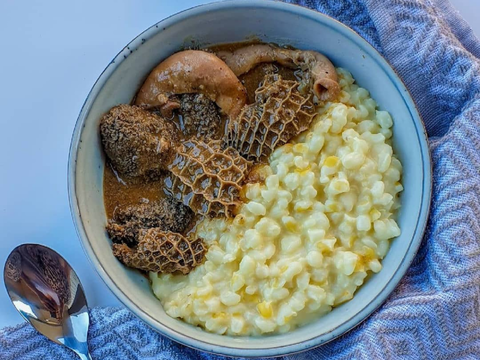

Samp and Tripe

Ingredients
- 1 Finely chopped onion
- 1t Paprika
- 1½t Salt
- 1½t Black pepper
- 1t Garlic powder
- 1 Chicken stock cube
- 1½ Cups hot water
- 2T Cooking oil
Steps/h5>
- Sauté (normal) onion in the Instant Pot until translucent then add tripe, water and all the
ingredients. Stir/ mix very well.
- Switch to PRESSURE COOK, high level for 45minutes... Allow a 10 min natural release,
then quick release remaining pressure